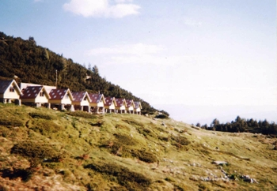
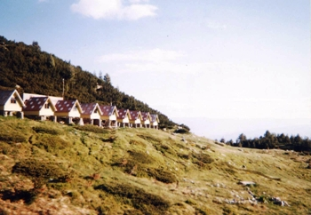

х. Каменица [Беговица] (97 легла)

з. Спано поле (30 легла)

х. Сини връх [Синаница] (50 легла)

з. Тевно езеро
|
|
Кой |
Колко |
| 1 |
Киров |
4 |
| 2 |
Ланджев |
4 |
| 3 |
Асенова |
1+? |
| 4 |
Маринов |
1+? |
| 5 |
П.Стайнов |
5 |
| 6 |
Р.Стайнов |
1 |
| 7 |
Кръстева |
1+? |
| 8 |
Димов |
1 |
| 9 |
Мездра |
2+2 |
|
|
Общо: |
22 |
|
х. Каменица [Беговица] (97 легла) |
 з. Спано поле (30 легла) |
|
х. Сини връх [Синаница] (50 легла) |
з. Тевно езеро |
Нощуване на заслон Тевно
езеро
на палатки или на тясно в заслона. През нощта температурата пада до 0
градуса!
Да се носят топли дрехи.
"Лежи непосретствено на брега на Тевното езеро. Представлява масивна двуетажна сграда с капацитет 30 места. До заслона има разпънати палатки, в които също можете да пренощувате (срещу необходимото заплащане). Когато заслона е препълнен, палатките са по-добрия избор. Водата за пииене е в съседство до заслона. Недейте да пиетe от езерото, освен ако не искате да имате един "незабравим" ден. Тоалeтните са извън заслона."
"Физик и математик били полегнали на наровете на заслон
Тевно
езеро
и физикът подхванал: Представи си че на онзи нар отсреща лежи една
готина филоложка. Колко хубаво би било, разстоянието между моя и нейния
нар да намалява два пъти на всеки пет минути....
Математикът се изхилил злорадо - Това е геометрична прогресия
която макар и да клони бързо към нула, все пак никога няма да я
достигне. Никога няма да се допрете. Освен ако чакаш безкрайно.
А физикът му рекъл: Абе така е, ама за практически нужди е напълно
достатъчно.
:)"
"Ако пък ли у вас се е запазил още живец и желание за покоряване
можете
да продължите надясно към вр. Каменица(2822м). Изкачването му не е
сложно, а и гледката от върха е незабравима."
/*****************старо*********************
3. ден - 20.08
з. Спано поле (2030) - Синанишка порта (2426) - х. Синаница (2190) - 2
часа
вариант:
з. Спано поле (2030) - Бъндеришка порта (2499) - около 3 часа
Бъндеришка порта (2499) - Синанишка порта (2426) - х. Синаница (2190) -
около 3 часа
********************************************/
3. ден - 20.08
з. Тевно езеро (2512) - Мозговишка порта (2520) - Чаирски превал (2445)
- з. Спано поле (2030) - 4 часа в обратна посока
з. Спано поле (2030) - Синанишка порта (2426) - х. Синаница (2190) - 2
часа
4. ден - 21.08
х. Синаница (2190) - Синанишка порта (2426) - х. Яне Сандански (1230) -
3 часа
х. Яне Сандански (1230) - София - с кола или до гарата на гр. Сандански
с автобус и оттам с влак
Имена
на хижи, порти, превали и върхове:
х. Каменица = х. Бъндерица
х. Синаница = х. Сини връх
Кози превал = Беговишка порта = Каменишка порта
Чаирски превал = Чаирска порта = Винарска порта
Мозговишка порта = Превалска порта = Валявишка порта = Демянишка порта
Синанишка порта = Синивръшка порта = Разцепнишка порта
Муратов връх = Гранитен връх
| № |
Дата |
Сборен пункт/час |
Маршрут | Продължителност |
Участници |
| 1. |
24 май |
|
х. Манастирски (Бонсови) поляни - вр. Дупевица (1256 м, първенецът на планина Люлин) и обратно | 3 часа |
сем. Кирови |
| 2. |
28 май |
8
часа - София, Долни Богров 10 часа - Копривщица |
София -
Копривщица (кола) Копривщица - в. Богдан - Копривщица Копривщица - София (кола) |
3 часа
изкачване, 2 часа връщане |
сем.
Кирови |
| 3. |
|
|
|
|
|